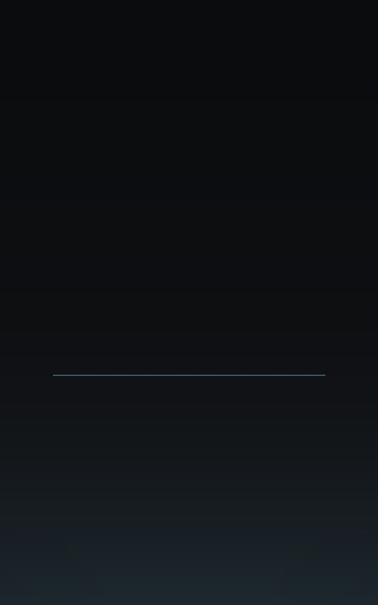

The Resurfacing
The great houses do not die. They sink — and rule the surface from centuries below.
The deep has started answering letters. Every reply knows things only the dead knew.

Weeks after the transmission, the dialogue begins. Letters that once took generations are answered in days — the choir below spends time the way an ocean spends water — and each reply arrives in a different founder's voice, correct in every private particular. Authentication by intimacy; horror by the same. Under audit, the thousand-year record of guidance from the deep resolves into a pattern nobody sanctioned: the Reach has been manufacturing components of something, on a schedule set from below, since before its oldest living memory. The duology's close holds its double reading to the final page — transcendence or extinction, choir or engine — and gives the last line to where it always belonged: a letter.
Ainda não está à venda. A linha do tempo ainda assenta.